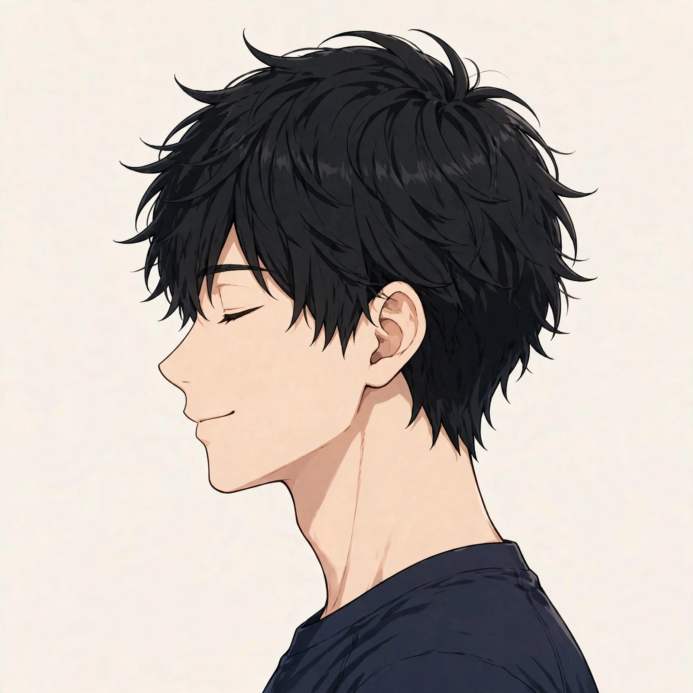
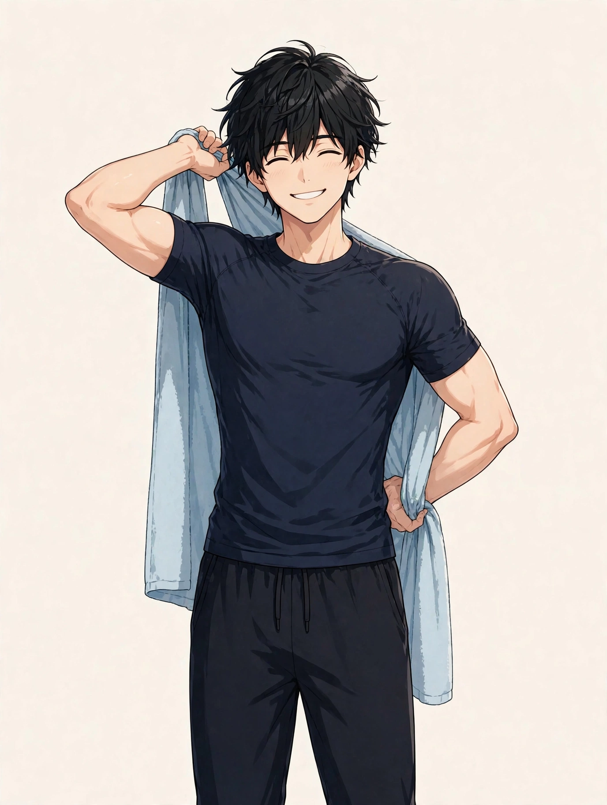

東三国で季節の変わり目に気になる頭の重さ
男性の寒暖差の時期の過ごし方とセルフケア、受診の目安

「季節の変わり目になると、朝起きたときから頭が重い感じがする」「昼間は平気でも、夕方になると頭の奥が重くてぼんやりする」「天気が崩れる前日や、急に冷え込んだ日に限って頭の重さを感じる気がする」。東三国や新大阪、淀川区周辺で働く男性から、季節の変わり目の時期にまつわるこうした声を聞くことがあります。季節の変わり目の頭の重さの感じ方や背景は人によって異なり、一つの原因だけで説明できるものではありません。この記事では原因を断定するのではなく、季節の変わり目に気になる頭の重さについての一般的な考え方と、考えられる要因、寒暖差の時期の過ごし方と日常で試せるセルフケア、医療機関に相談したほうがよい目安をまとめます。同じ季節の変わり目の場面でも冷え感に絞った季節の変わり目の冷え感についてのコラムや、雨の日の場面に絞った雨の日の体のだるさについてのコラム、仕事帰りの場面に絞った仕事帰りの首こりと頭の重さについてのコラムとは視点を分け、ここでは「季節の変わり目」という時期と「寒暖差」に焦点を当てます。お悩み別のページでも頭の重さや自律神経の乱れ感としてまとめています。
季節の変わり目の頭の重さとは：寒暖差の時期に表れやすい頭の重だるさ
一般に「頭が重い」と呼ばれる感覚は、頭全体が重だるく感じる、頭の奥がぼんやりする、額やこめかみが圧迫されるように感じる、帽子をかぶっているような締めつけ感がある、などとして自覚されることが多いとされています。痛みとして鋭く感じる頭痛とは違い、「すっきりしない」「重い」という表現で語られることが多いのも特徴です。季節の変わり目は、朝晩と日中の気温差が大きくなり、天気が崩れる日も増える時期です。「去年もこの時期は頭が重かった」「暖かくなり始め（寒くなり始め）の数週間だけ気になる」というように、時期と重なって自覚する方がいます。出方も「朝に強く、日中は楽になる」「夕方から夜に重くなる」「天気が崩れる前日に出やすい」など人それぞれです。まずは「どの時期の、どんな天気や気温の日・時間帯に、どんな感覚があるか」「平常時と比べて何が違うか」を自分の言葉で整理しておくと、その時期の過ごし方の見直しやセルフケアの選び方、専門家に相談するときの伝え方がスムーズになります。頭の重さとあわせて、首や肩の張り、体のだるさ、眠りの浅さを感じる場合もあり、その時期の過ごし方全体を振り返ってみることも一つの手がかりになります。
考えられる要因の整理
季節の変わり目に頭の重さを意識する背景には、その時期ならではの寒暖差の大きさや気圧の変化に、冷暖房の切り替えや生活の変化などが重なっている場合があります。以下は代表的なものとして挙げられる要因ですが、当てはまるかどうかや程度は人によって異なります。
頭の重さと重なって自覚されやすい部位の位置は、図1のとおりです。

季節の変わり目の頭の重さも、頭そのものだけでなく、額やこめかみ、後頭部、首まわりの張りと重なって自覚されることが多いとされます。寒暖差の大きい日は、首まわりにも力が入りやすくなります。位置は目安です。
- 朝晩と日中の寒暖差の大きさ：季節の変わり目は、一日の気温差が10度近くになる日も珍しくありません。体は気温に合わせて体温を保とうと働くため、その切り替えが頻繁に求められる時期は、負担を感じやすい、と語る方がいます。日によって気温が大きく上下することも、この時期ならではの特徴です。
- 気圧の変化が重なる時期：季節の変わり目は天気が移ろいやすく、低気圧が近づく日や、晴れと崩れが短い間隔で入れ替わる日が増えます。雨の日に絞ったコラムでも触れたように、気圧の変化する日に頭の重さや体のだるさを自覚する方もいます。感じ方には個人差が大きく、天気だけが要因とは限りません。
- 冷暖房の切り替えと、室内外の温度差：冷房と暖房の境目の時期は、建物によって空調の設定がまちまちで、室内外や部屋ごとの温度差が大きくなることがあります。職場・電車・自宅と移動するたびに温度差を繰り返す日が続くと、体がついていきにくいと感じる方もいます。
- 服装の選びにくさと、首まわりの冷え：朝晩は冷えるのに日中は暖かい日は、服装の調整が難しくなります。薄着で冷えた日や、首元が開いた服装で冷たい風に当たった日は、首や肩まわりに力が入りやすく、夕方に頭の重さと重なって感じられる場合があります。
- 寝具の切り替え時期と、睡眠の質の変化：掛け布団やパジャマの切り替えが気温に合っていないと、夜中に暑さや明け方の冷えで眠りが浅くなることがあります。眠りが浅い日が続くと、翌朝の頭の重さや日中のぼんやり感として表れやすい、と感じる方もいます。
- 花粉など季節性の要因の可能性：季節の変わり目は、花粉の飛ぶ時期と重なる地域もあります。鼻づまりや鼻の奥の重さがあると、頭の重さと重なって感じられる方もいます。目のかゆみやくしゃみなど、ほかの季節性の様子があるかどうかも、振り返りの材料になります。
- 体そのものの側の要因の可能性：頭の重さや頭痛の背景には、副鼻腔の炎症、血圧の変動、目の疲れ、睡眠時無呼吸といった体の状態や、ほかの病気が関わる場合もあります。「季節の変わり目だから」と決めつけないことは、受診の目安とあわせて押さえておきたい点です。
寒暖差の時期の過ごし方と、日常で試せるセルフケア
季節の変わり目の時期に、日常の中で無理なく取り入れやすいものを中心にまとめました。強い力で押したり、首を急に動かしたりはせず、痛みやめまいなど様子の変化があるときは無理をしないでください。気になる様子が強いときは、セルフケアより先に医療機関への相談をご検討ください。
- 脱ぎ着できる重ね着で、気温差に備える：朝晩と日中の気温差が大きい時期は、カーディガンや薄手の上着など、脱ぎ着できる服装を一枚足す工夫です。首元を冷やさないよう、襟のある服や薄手のストールを合わせる方もいます。
- 蒸しタオルで首の付け根や額を温める：夕方や入浴のついでに、温かい蒸しタオルを首の後ろや額に数分当てる形です（手順は図2）。熱すぎない温度で、気持ちよいと感じる範囲にとどめてください。
- 首をゆっくり傾ける、肩を小さく回す：首を左右にゆっくり傾ける、両肩を上げてストンと下ろす、肩を前後に小さく回す、といった軽い動きです。勢いをつけず、痛みやしびれを感じる方向には無理に動かさないでください。
- シャワーで済ませず、湯船に浸かる日を作る：季節の変わり目は、ついシャワーで済ませがちです。ぬるめのお湯に短時間からでも浸かる日を作ると、体を温める習慣の見直しになります。のぼせやすい方は、長湯を避け、水分をとりながら行ってください。
- 寝具とパジャマの切り替えを早めにする：掛け布団やパジャマは、気温の変化に合わせて早めに入れ替え、明け方の冷え込みに備えて一枚羽織れるものを枕元に置く、といった備えです。夜中に暑さや寒さで目が覚める日が続くときは、切り替えの合図になります。
- 天気予報で、翌日の気温差と天気の崩れを先に知る：前日のうちに翌日の最高・最低気温や天気の変化を確認しておき、気温差の大きい日や天気が崩れる日は、予定を詰め込みすぎない、早めに休む、といった備え方です。自分の感覚と天気を照らし合わせる記録代わりにもなります。
- こめかみや額をやさしく押さえる：両手の指の腹をこめかみや額に軽く当て、小さく円を描くようにやさしく押さえる形です。力を入れず、皮膚をこすらない範囲で行ってください。目を閉じて数分休む時間と組み合わせる方もいます。

①タオルを水で濡らして軽く絞り、電子レンジなどで温める（やけどをしない温度か、必ず手で確かめる） ②首の後ろや額に当て、椅子に座って楽な姿勢で過ごす ③数分たってタオルが冷めてきたら外し、首をゆっくり動かしてから普段の過ごし方に戻る、が基本の流れです。熱いと感じたら、すぐに外してください。
セルフケアは一度に全部をやろうとせず、その日の天気や気温に合わせて続けられそうなものを一つ選ぶところから始めるのがおすすめです。感じ方には個人差があり、その週の仕事内容や睡眠、気温の変化の大きさによっても変わりますので、無理のない範囲で行ってください。市販薬などを使う場合は、用法・用量や対象を商品の表示で確認し、頼る日が長く続くときは専門家への相談もご検討ください。
医療機関への受診を考える目安
次のような様子がある場合は、セルフケアや当院でのケアの前に、医療機関への相談をご検討ください。当院は医療機関ではなく、症状の診断や治療は行いません。「季節の変わり目のせい」と思っていても、背景にほかの原因が関わる場合があります。特に、今までにない強さの頭痛や、ほかの症状を伴う場合は、時期にかかわらず早めの相談が大切です。
- 今までにない強い頭痛、突然始まった頭痛がある
- ろれつが回らない、手足のしびれや動かしにくさ、見え方の異常など、ほかの様子を伴う
- 発熱や首のこわばり、吐き気・嘔吐を伴う
- 頭を打ったあとから、頭の重さや痛みが続いている
- めまいや耳鳴りを伴う、血圧が高い状態が続いている
- セルフケアや過ごし方の見直しを続けても数週間以上様子が変わらない、日に日に強くなっている
上記に当てはまらなくても、気になる様子が続くときは、早めに医療機関や専門家へ相談することが大切です。自己判断だけで様子を見続けないことも一つの目安になります。
北辰堂のご案内
北辰堂は、大阪市淀川区東三国二丁目にある男性専用の整体院です。施術歴30年の平賀伸人（鍼灸師・国家資格）が、整体とリラクゼーションを行います。当院では鍼灸施術は行いません。営業は平日・土曜17:00〜22:00、日曜10:00〜22:00の完全予約制です。季節の変わり目に頭の重さが気になる方は、仕事帰りの平日・土曜の夕方や、日曜の時間帯に、その時期の気温や過ごし方も含めてご相談いただけます。プライバシーへの配慮のため、詳しい住所はご予約確定後にLINEでご案内します。
料金は60分 初回2,000円／2回目以降6,000円、90分 初回3,000円／2回目以降9,000円で、お支払いは現金のみです。施術を受けたからといって体の状態がどうなるかをお約束することはできませんが、その日の体の状態を確認しながら、頭の重さだけでなく首や肩、姿勢全体の様子も見て、ゆっくり体を預けられる時間をご用意しています。重ね着や寝具の切り替えなど、その時期の過ごし方で気になっていることも、カウンセリングの際にお聞かせください。気になるお悩みの例はお悩み別一覧にもまとめています。
コースの内容はメニュー・料金、施術者は施術者について、ご予約の流れは当日の流れとLINE予約の下書きづくり、場所についてはアクセスをご覧ください。あわせて季節の変わり目の冷え感についてのコラムや雨の日の体のだるさについてのコラム、仕事帰りの首こりと頭の重さについてのコラム、頭痛についてのコラム、よくある質問もご参考ください。
ほかのコラム記事
関連するお悩みページ
ご予約・ご相談はLINEから
東三国・新大阪・淀川区周辺で、体のケアの相談先をお探しの方は、LINE公式アカウント（北辰堂）からお気軽にご連絡ください。現在の状態をお聞きしたうえで、施術の進め方をご案内します。
LINEで予約する